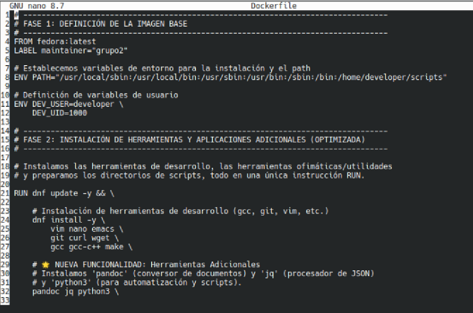
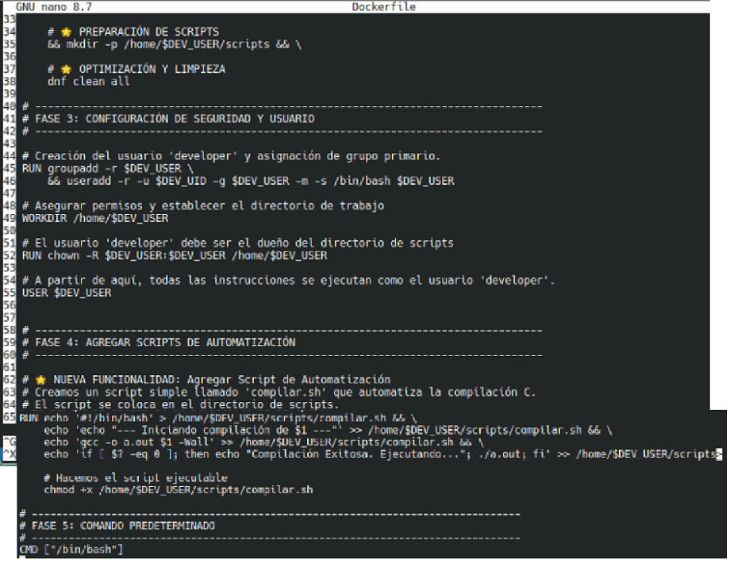
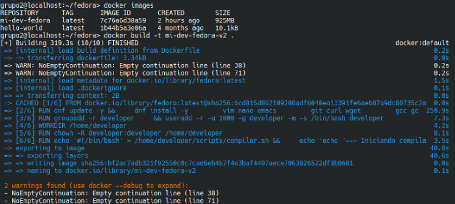
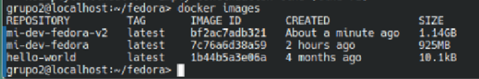

Actividad 5: Docker Hub y Modificaciones
Actividad 5.1: Modificaciones al contenedor
Se agregann herramientas: pandoc, jq y python3; y un script de automatizacion
 Se agregann herramientas: pandoc, jq y python3; y un script de automatizacion
Captura docker build con nuevo Dockerfile
Comparación tamaño de imagenes: La nueva imagen es más grande por más de 800 Mb
Video Nuevas Funcionalidades
Actividad 5.2: Publicación en Docker Hub